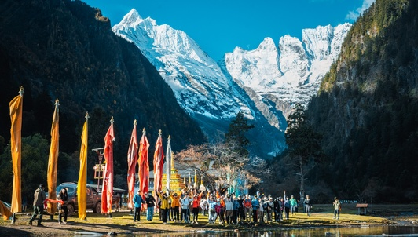

一日游
¥198起
已售 16625 | 店铺: H...

多日游
¥1880起
已售 2241 | 店铺: 西...
多日游
¥2380起
已售 1983 | 店铺: 思...
多日游
¥1290起
已售 8730 | 店铺: 思...
包车/拼车
¥3480起
已售 1912 | 店铺: 爱...
多日游
¥1290起
已售 8730 | 店铺: 思...
多日游
¥4080起
已售 3868 | 店铺: 爱...
多日游
¥1880起
已售 2241 | 店铺: 西...